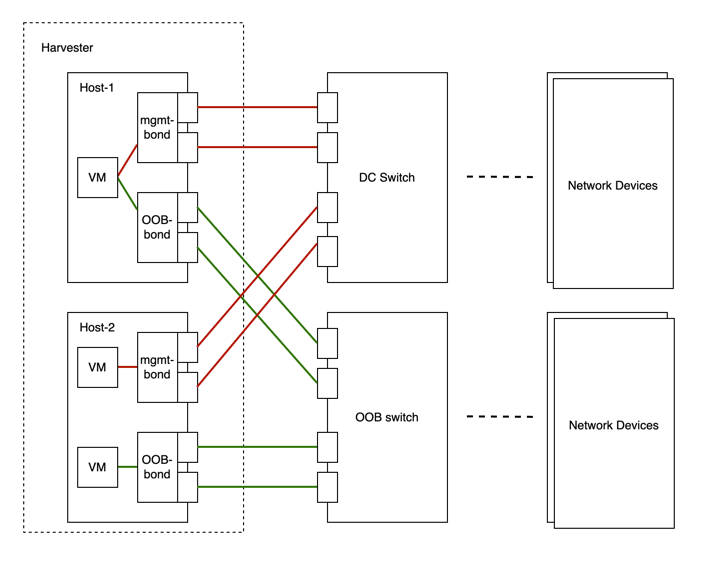
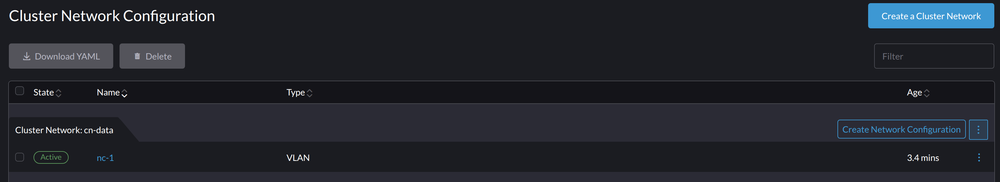

Réseau de cluster
Concepts
Réseau de cluster
Le diagramme suivant décrit une architecture réseau typique qui sépare le trafic du centre de données (DC) du trafic hors bande (OOB).

Nous abstraisons la somme des dispositifs, des liens et des configurations sur un chemin de transfert isolé du trafic sur SUSE Virtualization en tant que réseau de cluster.
Dans le cas ci-dessus, il y aura deux réseaux de cluster correspondant à deux chemins de transfert isolés du trafic.
configuration réseau
Les spécifications, y compris les dispositifs réseau des hôtes SUSE Virtualization, peuvent être différentes. Pour être compatible avec un tel cluster hétérogène, nous avons conçu la configuration réseau.
La configuration réseau ne fonctionne que sous un certain réseau de cluster. Chaque configuration réseau correspond à un ensemble d’hôtes avec des spécifications réseau uniformes. Par conséquent, plusieurs configurations réseau sont nécessaires pour un réseau de cluster sur des hôtes non uniformes.
Réseau VM
Un réseau VM est une interface dans une machine virtuelle qui se connecte au réseau hôte. Comme pour une configuration réseau, chaque réseau, sauf le réseau de gestion intégré, doit être sous un réseau de cluster.
SUSE Virtualization prend en charge l’ajout de plusieurs réseaux à une VM. Si le réseau de cluster d’un réseau n’est pas activé sur certains hôtes, la VM qui possède ce réseau ne sera pas planifiée sur ces hôtes.
Veuillez vous référer à partie réseau pour plus de détails sur les réseaux.
Relation entre le réseau de cluster, la configuration réseau, le réseau VM
Le diagramme suivant montre la relation entre un réseau de cluster, une configuration réseau et un réseau VM.

Tous Network Configs et VM Networks sont regroupés sous un réseau de cluster.
-
Une étiquette peut être attribuée à chaque hôte pour catégoriser les hôtes en fonction de leurs spécifications réseau.
-
Une configuration réseau peut être ajoutée pour chaque groupe d’hôtes à l’aide d’un sélecteur de nœuds.
Par exemple, dans le diagramme ci-dessus, les hôtes dans ClusterNetwork-A sont divisés en trois groupes comme suit :
-
Le premier groupe comprend host0, qui correspond à
network-config-A. -
Le deuxième groupe comprend host1 et host2, qui correspondent à
network-config-B. -
Le troisième groupe comprend les hôtes restants (host3, host4 et host5), qui n’ont pas de configuration réseau associée et ne font donc pas partie de
ClusterNetwork-A.
Le réseau de cluster n’est efficace que sur les hôtes couverts par la configuration réseau. Une VM utilisant un VM network sous un réseau de cluster spécifique ne peut être planifiée que sur un hôte où le réseau de cluster est actif.
Dans le diagramme ci-dessus, nous pouvons voir que :
-
ClusterNetwork-Aest actif sur host0, host1 et host2.VM0utiliseVM-network-A, donc il peut être planifié sur n’importe lequel de ces hôtes. -
VM1utilise à la foisVM-network-BetVM-network-C, donc il ne peut être planifié que sur host2 oùClusterNetwork-AetClusterNetwork-Bsont actifs. -
VM0,VM1etVM2ne peuvent pas fonctionner sur host3 où les deux réseaux de cluster sont inactifs.
Dans l’ensemble, ce diagramme fournit une visualisation claire de la relation entre les réseaux de cluster, les configurations réseau et les réseaux de VM, ainsi que de leur impact sur la planification des VM sur les hôtes.
Détails du réseau de cluster :
Les réseaux de cluster sont des chemins de transmission isolés pour la transmission du trafic réseau au sein d’un cluster SUSE Virtualization.
Un réseau de cluster appelé mgmt est automatiquement créé lorsqu’un cluster SUSE Virtualization est déployé. Vous pouvez également créer des réseaux de cluster personnalisés qui peuvent être dédiés au trafic des machines virtuelles.
Réseau de cluster intégré :
Lorsqu’un cluster SUSE Virtualization est déployé, un réseau de cluster nommé mgmt est automatiquement créé pour les communications intra-cluster. mgmt se compose du même pont, de la même liaison et des mêmes NIC que le réseau d’infrastructure externe auquel chaque hôte SUSE Virtualization se connecte avec des NIC de gestion. En raison de cette conception, mgmt permet également d’accéder aux machines virtuelles depuis le réseau d’infrastructure externe à des fins de gestion de cluster.
mgmt ne nécessite pas de configuration réseau et est toujours activé sur tous les hôtes. Vous ne pouvez pas désactiver et supprimer mgmt.
|
Dans SUSE Virtualization v1.5.x et les versions antérieures, toute la plage d’ID VLAN (2 à 4094) était attribuée aux interfaces Pour plus d’informations, voir problème #7650. |
À partir de v1.6.0, seul le ID VLAN principal fourni lors de l’installation est automatiquement ajouté au pont mgmt-br et à l’interface mgmt-bo. Vous pouvez ajouter des interfaces VLAN secondaires après la fin de l’installation.
Lors de l’installation du premier nœud de cluster, vous pouvez configurer la valeur MTU pour mgmt en utilisant le paramètre install.management_interface. La valeur par défaut du champ mtu est 1500, qui est ce que mgmt utilise généralement. Cependant, si vous spécifiez une valeur MTU autre que 0 ou 1500, vous devez ajouter une annotation correspondante après le déploiement du cluster.
|
Ajouter des interfaces VLAN secondaires
-
Vérifiez les paramètres VLAN actuels pour les profils de connexion
bond-mgmtetbridge-mgmt.Exemple (où l’ID VLAN principal est 2017) :
$ nmcli -f bridge-port.vlans con show bond-mgmt bridge-port.vlans: 1 pvid untagged, 2017 $ nmcli -f bridge.vlans con show bridge-mgmt bridge.vlans: 2017 -
Mettez à jour les profils de connexion
bond-mgmtetbridge-mgmtpour ajouter l’ID VLAN secondaire.Exemple (où l’ID VLAN principal est 2017 et l’ID VLAN secondaire est 2018) :
$ nmcli con modify bond-mgmt bridge-port.vlans '1 pvid untagged, 2017, 2018' $ nmcli con modify bridge-mgmt bridge.vlans 2017,2018 -
Redémarrez chaque nœud pour appliquer le changement.
Annoter une valeur MTU non par défaut à mgmt après installation.
Si vous avez spécifié une valeur autre que 0 ou 1500 dans le champ mtu de la configuration install.management_interface, vous devez annoter cette valeur à l’objet mgmt clusternetwork. Sans l’annotation, tous les réseaux VM créés utilisent la valeur MTU par défaut 1500 au lieu d’hériter automatiquement de la valeur que vous avez spécifiée.
Par exemple :
$ kubectl annotate clusternetwork mgmt network.harvesterhci.io/uplink-mtu="9000"
|
Vous devez vous assurer des éléments suivants :
|
Changez la valeur MTU de mgmt après installation.
-
Arrêtez toutes les machines virtuelles qui sont attachées au réseau
mgmt. -
(Optionnel) Désactivez le réseau de stockage s’il utilise
mgmtet est activé. -
Changez la valeur MTU pour les profils de connexion
bond-mgmt,bridge-mgmtetvlan-mgmt(si vous utilisez un VLAN).Exemple :
$ nmcli con modify bond-mgmt 802-3-ethernet.mtu 9000 $ nmcli con modify bridge-mgmt 802-3-ethernet.mtu 9000 $ nmcli con modify vlan-mgmt 802-3-ethernet.mtu 9000 $ nmcli device reapply mgmt-bo $ nmcli device reapply mgmt-br -
Vérifiez les valeurs MTU en utilisant la commande
ip link. -
Annoter l’objet
mgmtclusternetworkavec la nouvelle valeur MTU.Exemple :
$ kubectl annotate clusternetwork mgmt network.harvesterhci.io/uplink-mtu="9000"Tous les réseaux VM qui sont attachés à
mgmthéritent automatiquement de la nouvelle valeur MTU. -
(Optionnel) Activez le réseau de stockage que vous avez désactivé avant de changer la valeur MTU.
-
Démarrez toutes les machines virtuelles qui sont attachées à
mgmt. -
Vérifiez que les charges de travail des machines virtuelles fonctionnent normalement.
Pour plus d’informations, reportez-vous au [Change the MTU of a network configuration with an attached storage network].
Réseau de cluster personnalisé
Si plus d’une interface réseau est attachée à chaque hôte, vous pouvez créer des réseaux de cluster personnalisés pour une meilleure isolation du trafic. Chaque réseau de cluster doit avoir au moins une configuration réseau avec une portée définie et un mode de liaison.
|
Le nœud témoin n’est généralement pas impliqué dans le réseau de cluster personnalisé. |
Configuration
Créez un nouveau réseau de cluster
|
Pour simplifier la maintenance du cluster, créez une configuration réseau pour chaque nœud ou groupe de nœuds. Sans configurations réseau dédiées, certaines tâches de maintenance (par exemple, remplacer d’anciens NIC par des NIC dans des emplacements différents) nécessiteront d’arrêter et/ou de migrer les machines virtuelles concernées avant de mettre à jour la configuration réseau. |
-
Assurez-vous que les exigences matérielles sont remplies.
-
Allez à Réseaux → ClusterNetworks/Configs, puis cliquez sur Créer.
-
Spécifiez un nom pour le réseau de cluster.

-
Sur l’écran ClusterNetworks/Configs, cliquez sur le bouton Créer la configuration réseau du réseau de cluster que vous avez créé.

-
Sur l’écran Configuration réseau : Créer, spécifiez un nom pour la configuration.
-
Dans l’onglet Sélecteur de nœud, sélectionnez la méthode pour définir la portée de cette configuration réseau spécifique.

-
La méthode Tout sélectionner ne fonctionne que lorsque tous les nœuds utilisent les mêmes NIC dédiés pour ce réseau de cluster personnalisé spécifique. Dans d’autres situations (par exemple, lorsque le cluster a un nœud témoin), vous devez sélectionner l’une des méthodes restantes.
-
Si vous souhaitez que la configuration s’applique à des nœuds qui ne sont pas couverts par la méthode sélectionnée, vous devez créer une autre configuration réseau.
-
-
Dans l’onglet Uplink, configurez les paramètres suivants :
-
NICs : La liste contient des NICs qui sont communs à tous les nœuds sélectionnés. Les NICs qui ne peuvent pas être sélectionnés ne sont pas disponibles sur un ou plusieurs nœuds et doivent être configurés. Une fois le dépannage terminé, actualisez l’écran et vérifiez que les NICs peuvent être sélectionnés.
-
Options de liaison : Le mode de liaison par défaut est
active-backup. -
Attributs : Vous devez utiliser la même MTU dans toutes les configurations réseau d’un réseau de cluster personnalisé. Si vous ne spécifiez pas de MTU, la valeur par défaut
1500est utilisée. Le webhook SUSE Virtualization rejette une nouvelle configuration réseau si sa MTU ne correspond pas à la MTU des configurations réseau existantes.
Les commutateurs physiques connectés aux interfaces Bond doivent être configurés en tant que ports de trunk. Ces ports doivent accepter le trafic tagué et envoyer le trafic tagué avec l’ID VLAN utilisé par le réseau VM.
-
-
Cliquez sur Enregistrer.
Modifier une configuration réseau
Les modifications apportées aux configurations réseau existantes peuvent affecter SUSE Virtualization machines virtuelles et charges de travail, ainsi que des dispositifs externes tels que des commutateurs et des routeurs. Pour plus d’informations, voir Topologie réseau.
|
Vous devez arrêter toutes les machines virtuelles affectées avant de modifier une configuration réseau. |
Les sections suivantes décrivent les étapes que vous devez suivre pour changer la MTU d’une configuration réseau. Le réseau de cluster d’exemple utilisé dans ces sections a cn-data qui a été construit avec une valeur de MTU de 1500 et doit être changé en 9000.

Modifications générales
-
Localisez le réseau de cluster cible et la configuration réseau.
Dans l’exemple suivant, le réseau de cluster est
cn-dataet la configuration réseau estnc-1.
-
Sélectionnez ⋮ → Modifier la configuration, puis modifiez les champs pertinents.
-
Onglet Sélecteur de nœud :

-
Onglet Uplink :

Vous devez utiliser les mêmes valeurs pour les champs Options de liaison et Attributs dans toutes les configurations réseau d’un réseau de cluster personnalisé.
-
-
Cliquez sur Enregistrer.
Changez le MTU d’une configuration réseau sans réseau de stockage attaché
Dans ce scénario, le paramètre de réseau de stockage n’est ni activé ni attaché au réseau de cluster cible.
|
Si vous devez changer le MTU, effectuez les étapes suivantes :
-
Arrêtez toutes les machines virtuelles qui sont attachées au réseau de cluster cible.
Vous pouvez vérifier cela en utilisant le réseau de machine virtuelle et tous les réseaux secondaires que vous avez pu utiliser. Ne changez pas le MTU tant que des machines virtuelles connectées sont encore en cours d’exécution.
-
Vérifiez les configurations réseau du réseau de cluster cible.
Si plusieurs configurations réseau existent, enregistrez le sélecteur de nœud pour chacune et supprimez les configurations jusqu’à ce qu’il n’en reste qu’une seule.
-
Changez le MTU de la configuration réseau restante.
Vous devez également changer le MTU sur le commutateur externe ou le routeur externe du pair.
-
Vérifiez que le MTU a été changé en utilisant la commande Linux
ip link.Si la configuration réseau sélectionne plusieurs nœuds SUSE Virtualization, exécutez la commande sur chaque nœud.
La sortie doit montrer le nouveau MTU de l’appareil
*-brconcerné et l’étatUP. Dans l’exemple suivant, l’appareil estcn-data-bret le nouveau MTU est9000.Harvester node $ ip link show dev cn-data-br |new MTU| |state UP| 3: cn-data-br: <BROADCAST,MULTICAST,UP,LOWER_UP> mtu 9000 qdisc noqueue state UP mode DEFAULT group default qlen 1000 link/ether 52:54:00:6e:5c:2a brd ff:ff:ff:ff:ff:ffLorsque l’état est
UNKNOWN, il est probable que les valeurs MTU sur SUSE Virtualization et le commutateur ou le routeur externe ne correspondent pas. -
Testez le nouveau MTU sur les nœuds SUSE Virtualization en utilisant des commandes telles que
ping.Vous devez envoyer les messages à un nœud SUSE Virtualization avec le nouveau MTU ou à un nœud avec une IP externe.
Dans l’exemple suivant, le réseau est
cn-data, le CIDR est192.168.100.0/24, et la passerelle est192.168.100.1.-
Définissez l’IP
192.168.100.100sur l’appareil pont.$ ip addr add dev cn-data-br 192.168.100.100/24 -
Ajoutez une route pour l’IP de destination (par exemple,
8.8.8.8) via la passerelle.$ ip route add 8.8.8.8 via 192.168.100.1 dev cn-data-br -
Pinguez l’IP de destination depuis la nouvelle IP
192.168.100.100.$ ping 8.8.8.8 -I 192.168.100.100 PING 8.8.8.8 (8.8.8.8) from 192.168.100.100 : 56(84) bytes of data. 64 bytes from 8.8.8.8: icmp_seq=1 ttl=59 time=8.52 ms 64 bytes from 8.8.8.8: icmp_seq=2 ttl=59 time=8.90 ms ... -
Pinguez l’IP de destination avec une taille de paquet différente pour valider le nouveau MTU.
$ ping 8.8.8.8 -s 8800 -I 192.168.100.100 PING 8.8.8.8 (8.8.8.8) from 192.168.100.100 : 8800(8828) bytes of data The param `-s` specify the ping packet size, which can test if the new MTU really works -
Supprimez la route que vous avez utilisée pour les tests.
$ ip route delete 8.8.8.8 via 192.168.100.1 dev cn-data-br -
Supprimez l’IP que vous avez utilisée pour les tests.
$ ip addr delete 192.168.100.100/24 dev cn-data-br
-
-
Ajoutez à nouveau les configurations réseau que vous avez supprimées.
Vous devez changer le MTU dans chaque configuration réseau et vérifier que le nouveau MTU a été appliqué. Le webhook SUSE Virtualization rejette une nouvelle configuration réseau si son MTU ne correspond pas au MTU des configurations réseau existantes.
Tous les réseaux VM qui sont attachés au réseau de cluster cible héritent automatiquement de la nouvelle valeur MTU.
Dans l’exemple suivant, le nom du réseau est vm100. Exécutez la commande kubectl get NetworkAttachmentDefinition.k8s.cni.cncf.io vm100 -oyaml pour vérifier que la valeur MTU a été mise à jour :
+
apiVersion: k8s.cni.cncf.io/v1
kind: NetworkAttachmentDefinition
metadata:
annotations:
network.harvesterhci.io/route: '{"mode":"auto","serverIPAddr":"","cidr":"","gateway":""}'
creationTimestamp: '2025-04-25T10:21:01Z'
finalizers:
- wrangler.cattle.io/harvester-network-nad-controller
- wrangler.cattle.io/harvester-network-manager-nad-controller
generation: 1
labels:
network.harvesterhci.io/clusternetwork: cn-data
network.harvesterhci.io/ready: 'true'
network.harvesterhci.io/type: L2VlanNetwork
network.harvesterhci.io/vlan-id: '100'
name: vm100
namespace: default
resourceVersion: '1525839'
uid: 8dacf415-ce90-414a-a11b-48f041d46b42
spec:
config: >-
{"cniVersion":"0.3.1","name":"vm100","type":"bridge","bridge":"cn-data-br","promiscMode":true,"vlan":100,"ipam":{},"mtu":9000} // MTU has been updated-
Démarrez toutes les machines virtuelles qui sont attachées au réseau de cluster cible.
Les machines virtuelles devraient avoir hérité de la nouvelle MTU. Vous pouvez vérifier cela dans le système d’exploitation invité en utilisant les commandes
ip linketping 8.8.8.8 -s 8800. -
Vérifiez que les charges de travail des machines virtuelles fonctionnent normalement.
|
SUSE Virtualization ne peut être tenu responsable de tout dommage ou perte de données pouvant survenir lors du changement de la valeur MTU. |
Changez la MTU d’une configuration réseau avec un réseau de stockage attaché.
Dans ce scénario, le paramètre réseau de stockage est activé et attaché au réseau de cluster cible.
Le réseau de stockage est utilisé par driver.longhorn.io, qui est le pilote CSI par défaut de SUSE Virtualization. SUSE Storage est responsable de la provision des volumes racines, donc changer la MTU affecte toutes les machines virtuelles.
|
Si vous devez changer le MTU, effectuez les étapes suivantes :
-
Arrêtez toutes les machines virtuelles.
-
Désactivez le paramètre de réseau de stockage.
Laissez un certain temps pour que le paramètre soit désactivé, puis vérifiez que le changement a été appliqué.
-
Vérifiez les configurations réseau du réseau de cluster cible.
Si plusieurs configurations réseau existent, enregistrez le sélecteur de nœud pour chacune et supprimez les configurations jusqu’à ce qu’il n’en reste qu’une.
-
Changez le MTU de la configuration réseau restante.
Vous devez également changer le MTU sur le commutateur externe ou le routeur du pair.
-
Vérifiez que la MTU a été changée en utilisant la commande
ip link.Si la configuration réseau sélectionne plusieurs nœuds SUSE Virtualization, exécutez la commande sur chaque nœud.
La sortie doit montrer le nouveau MTU de l’appareil
*-brconcerné et l’étatUP. Dans l’exemple suivant, l’appareil estcn-data-bret le nouveau MTU est9000.Harvester node $ ip link show dev cn-data-br |new MTU| |state UP| 3: cn-data-br: <BROADCAST,MULTICAST,UP,LOWER_UP> mtu 9000 qdisc noqueue state UP mode DEFAULT group default qlen 1000 link/ether 52:54:00:6e:5c:2a brd ff:ff:ff:ff:ff:ffLorsque l’état est
UNKNOWN, il est probable que les valeurs MTU sur SUSE Virtualization et le commutateur ou le routeur externe ne correspondent pas. -
Testez le nouveau MTU sur les nœuds SUSE Virtualization en utilisant des commandes telles que
ping.Vous devez envoyer les messages à un nœud SUSE Virtualization avec le nouveau MTU ou à un nœud avec une IP externe.
Dans l’exemple suivant, le réseau est
cn-data, le CIDR est192.168.100.0/24, et la passerelle est192.168.100.1.-
Définissez l’IP
192.168.100.100sur l’appareil pont.$ ip addr add dev cn-data-br 192.168.100.100/24 -
Ajoutez une route pour l’IP de destination (par exemple,
8.8.8.8) via la passerelle.$ ip route add 8.8.8.8 via 192.168.100.1 dev cn-data-br -
Pinguez l’IP de destination depuis la nouvelle IP
192.168.100.100.$ ping 8.8.8.8 -I 192.168.100.100 PING 8.8.8.8 (8.8.8.8) from 192.168.100.100 : 56(84) bytes of data. 64 bytes from 8.8.8.8: icmp_seq=1 ttl=59 time=8.52 ms 64 bytes from 8.8.8.8: icmp_seq=2 ttl=59 time=8.90 ms ... -
Pinguez l’IP de destination avec une taille de paquet différente pour valider le nouveau MTU.
$ ping 8.8.8.8 -s 8800 -I 192.168.100.100 PING 8.8.8.8 (8.8.8.8) from 192.168.100.100 : 8800(8828) bytes of data The param `-s` specify the ping packet size, which can test if the new MTU really works -
Supprimez la route que vous avez utilisée pour les tests.
$ ip route delete 8.8.8.8 via 192.168.100.1 dev cn-data-br -
Supprimez l’IP que vous avez utilisée pour les tests.
$ ip addr delete 192.168.100.100/24 dev cn-data-br
-
-
Ajoutez à nouveau les configurations réseau que vous avez supprimées.
Vous devez changer le MTU dans chaque configuration réseau et vérifier que le nouveau MTU a été appliqué. Le webhook SUSE Virtualization rejette une nouvelle configuration réseau si son MTU ne correspond pas au MTU des configurations réseau existantes.
-
Activez et configurez le paramètre de réseau de stockage, en vous assurant que les prérequis sont respectés.
-
Laissez un certain temps pour que le paramètre soit activé, puis vérifiez que le changement a été appliqué. Le
storagenetworkfonctionne avec la nouvelle valeur MTU.
Tous les réseaux VM qui sont attachés au réseau de cluster cible héritent automatiquement de la nouvelle valeur MTU.
+
Dans l’exemple suivant, le nom du réseau est vm100. Exécutez la commande kubectl get NetworkAttachmentDefinition.k8s.cni.cncf.io vm100 -oyaml pour vérifier que la valeur MTU a été mise à jour.
+
apiVersion: k8s.cni.cncf.io/v1 +
kind: NetworkAttachmentDefinition +
metadata: +
annotations: +
network.harvesterhci.io/route: '{"mode":"auto","serverIPAddr":"","cidr":"","gateway":""}' +
creationTimestamp: '2025-04-25T10:21:01Z' +
finalizers: +
- wrangler.cattle.io/harvester-network-nad-controller +
- wrangler.cattle.io/harvester-network-manager-nad-controller +
generation: 1 +
labels: +
network.harvesterhci.io/clusternetwork: cn-data +
network.harvesterhci.io/ready: 'true' +
network.harvesterhci.io/type: L2VlanNetwork
network.harvesterhci.io/vlan-id: '100' +
name: vm100 +
namespace: default +
resourceVersion: '1525839' +
uid: 8dacf415-ce90-414a-a11b-48f041d46b42 +
spec: +
config: >- +
{"cniVersion":"0.3.1","name":"vm100","type":"bridge","bridge":"cn-data-br","promiscMode":true,"vlan":100,"ipam":{},"mtu":9000} // MTU a été mis à jour
-
Démarrez toutes les machines virtuelles qui sont attachées au réseau de cluster cible.
Les machines virtuelles devraient avoir hérité du nouveau MTU. Vous pouvez vérifier cela dans le système d’exploitation invité en utilisant la commande Linux
ip linket la commandeping 8.8.8.8 -s 8800. -
Vérifiez que les charges de travail des machines virtuelles fonctionnent normalement.
|
SUSE Virtualization ne peut être tenu responsable de tout dommage ou perte de données pouvant survenir lors du changement de la valeur MTU. |